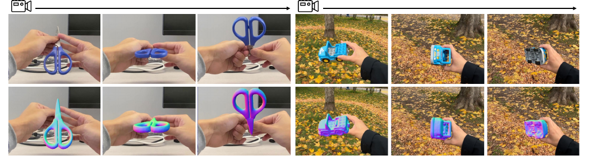
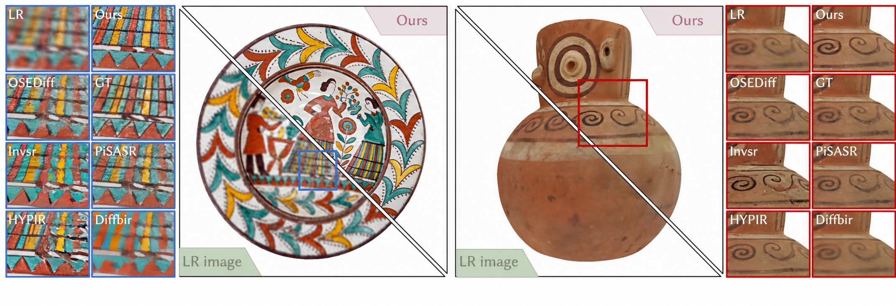
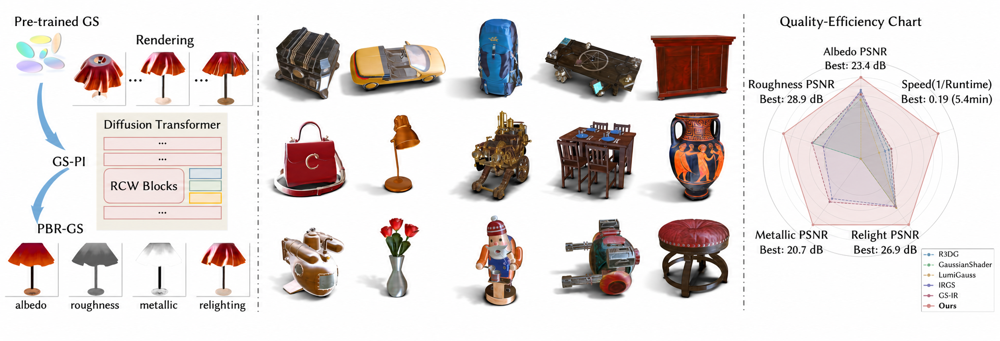

[202607] Two papers accepted by SIGGRAPH Asia 2026. 🎉🎉
[202605] One paper accepted by ICML 2026. 🎉
[202511] One papers accepted by AAAI 2026. 🎉
[202508] Two papers accepted by Siggraph Asia 2025. 🎉🎉
[202506] Two papers accepted by ICCV 2025.
[202504] one papers accepted by GMOD 2025.
[202502] one papers accepted by CVPR 2025.
Publication
* denotes equal contribution,† denotes corresponding author, Some papers are highlighted.

Dynhor+: Progressive Pose-Shape Optimization for Dynamic Hand-Held Object Reconstruction
Shijian Jiang, Yuchi Huo, Rengan Xie, Jiming Chen, Qi Ye† IEEE Transactions on Circuits and Systems for Video Technology (TCSVT), 2026

Texture+++: Elevating 3D Asset Texture Resolution with a Region-Aware Diffusion Model
Shuaiwei Wang*, Shi Li*, Jieting Xu, Yuchi Huo, Qi Wang, Wenting Zheng, Rengan Xie† Proc. SIGGRAPH Asia, 2026

GS-PI: An Optimization-Decoupled Appearance Decomposition Approach for Generating PBR Gaussian Assets
Jieting Xu, Rengan Xie, Zijian Huang, Zehui Jin, Rui Wang, Yuchi Huo† Proc. SIGGRAPH Asia, 2026
{kind=link}